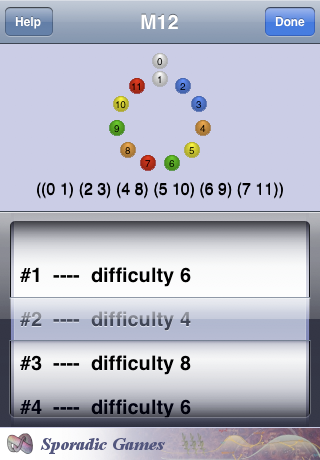

M12
Swap Permutations
The picker allows you to choose a swap move;
the preview shows you what a puzzle using that swap will look like.
If you select a different swap, you will be asked to confirm the change when you touch the Done button.
